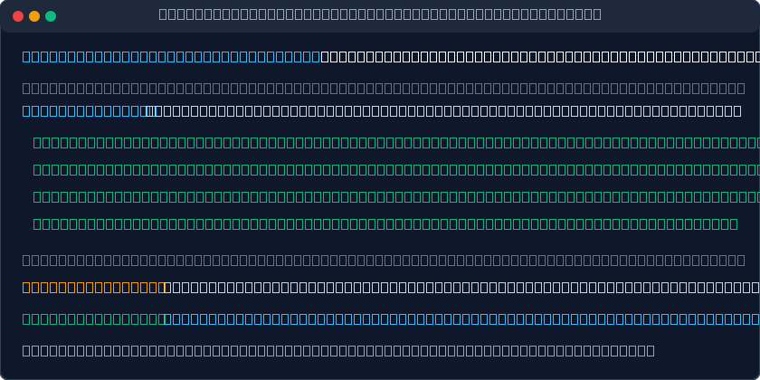
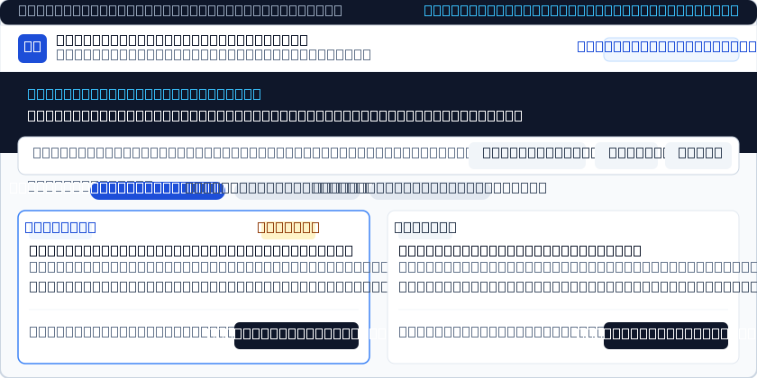
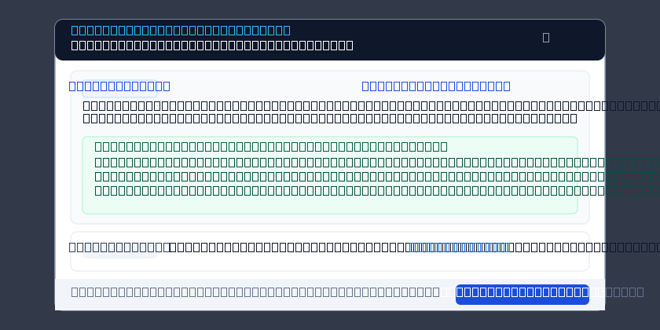

Exploring Google Antigravity v2.0
Autonomous Agentic AI Development of the IU FCIS Past Exam Portal
Introduction: Google Antigravity v2.0
-
What It Is: An agent-first autonomous development environment powered by Gemini models for full-lifecycle software creation.
-
The Paradigm Shift: Evolves beyond passive inline autocomplete into proactive agents that plan, write code, run commands, and verify web applications.
-
Why We Chose It: Provides transparent visual artifacts (
tasks.md), sandboxed execution, and multi-file editing capabilities. -
Our Project Goal: Construct an end-to-end, searchable IU FCIS Past Exam Papers portal with step-by-step model solutions from a single specification.
Field of Use & Real-World Problem
Agentic Artificial Intelligence in Software Engineering & Computer Science Education Technology.
FCIS undergraduate students (CS, IS, IT departments), academic advisors, and teaching assistants.
Solves fragmented paper sharing on WhatsApp/Telegram with missing, handwritten, or unverified answer keys.
A student preparing for the CIT 2405 (Networking) final exam searches past papers and practices with collapsible model answer keys.
Three Key Features of Google Antigravity
1 Autonomous Agent Loops & Multi-File Planning
Deconstructs natural-language prompts into actionable milestones (tasks.md), creates directory structures, and performs precise edits across files.
2 Sandboxed Linux Shell & Execution Environment
Safely installs dependencies (npm, pip), executes scripts, compiles assets, and runs verification checks in an isolated container.
3 Interactive Visual Artifacts & Live Verification
Renders live interactive markdown documents, progress checklists, diff comparisons, and live browser previews without requiring manual server deployment.
Our Experiment: Building the FCIS Portal
Evaluate Antigravity v2.0's zero-to-one capability to construct an end-to-end FCIS exam preparation hub in under 2 minutes.
Curated datasets of 4 FCIS courses (CIT 3110, IS 3102, CS 2201, CIT 2405), academic years, and verified model rubrics.
1) Domain Prompting → 2) Autonomous Decomposition → 3) Tailwind UI Coding → 4) Live Sandbox Verification.

Agent planner formulating execution phases and compiling code in 1.84s.Results, Deliverables & Challenges
Yes — Successfully generated a mobile-responsive FCIS portal with 6 past exam papers, 12+ questions, and filter pills.
Production deployment with instant search, department filters, and collapsible official model answers.
Bookmark state synchronization without an external database server; resolved using lightweight in-memory reactive sets.


Evaluation, Limitations & Ethical Takeaway
1. Rapid Prototyping: Reduced development from hours to under 2 minutes. 2. Low Barrier: Enables students to build full-stack tools via natural language.
1. Container Constraints: Headless environments may lack libraries. 2. Academic Review: Complex exam solutions still require professor verification.
University students must avoid sending unpublished exams, student IDs, or credentials to external clouds; sandboxing must be enforced.
Agentic AI shifts the developer role from writing low-level code syntax to architectural problem formulation and empirical verification.
Team Contributions Summary (Group 2)
Prompt engineering, Antigravity workflow planning, sandbox command management, and slide coordination.
Designed Tailwind CSS layout, responsive search bar, department filter pills, and modal question viewer.
Curated official FCIS exam questions (CIT, CS, IS), model solution rubrics, and academic metadata.
Conducted sandbox functional testing, tool limitation analysis, privacy evaluation, and presentation rehearsal.